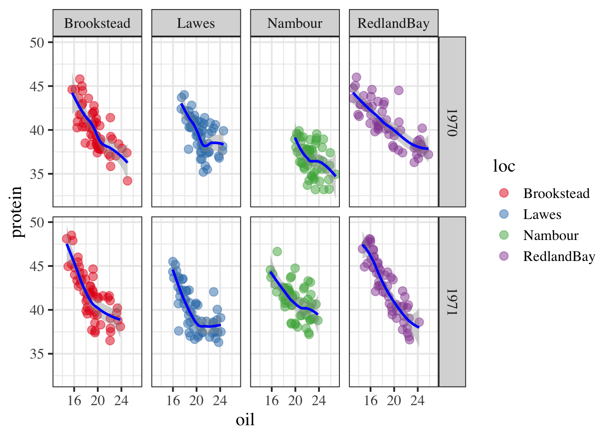
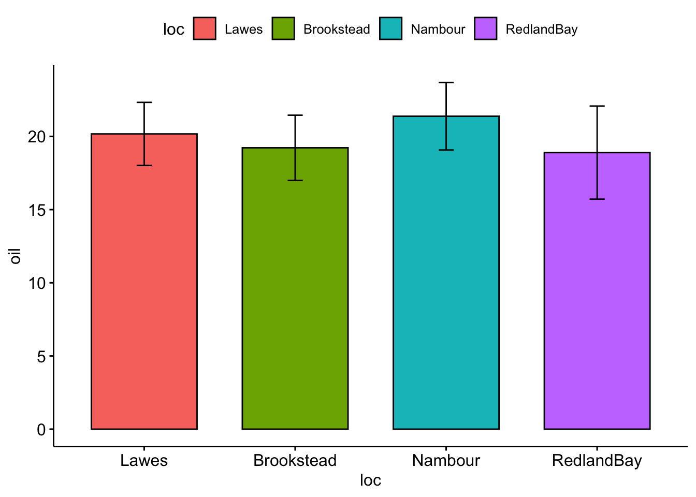
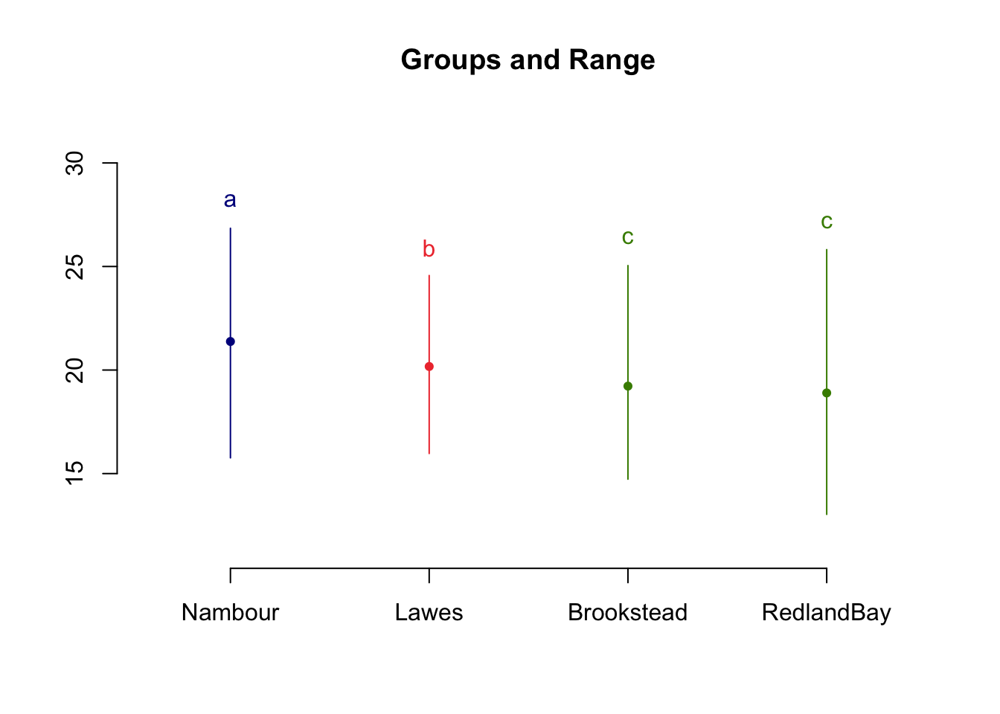
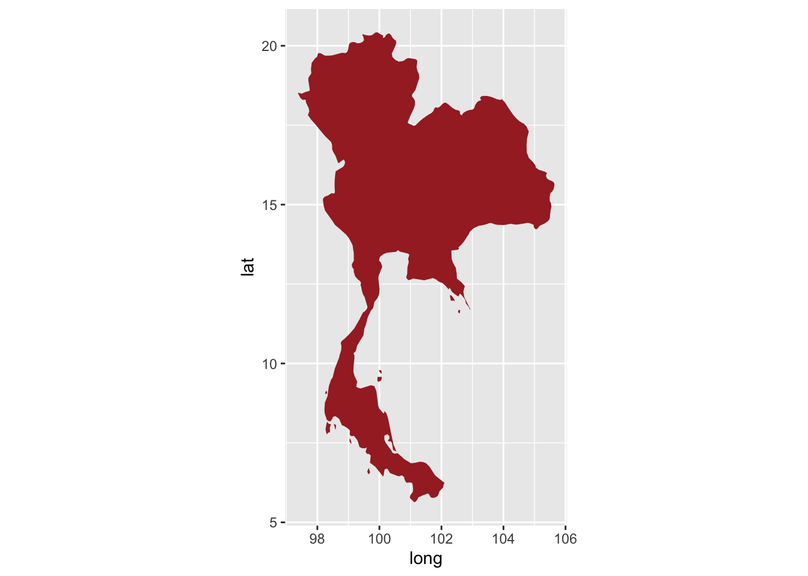
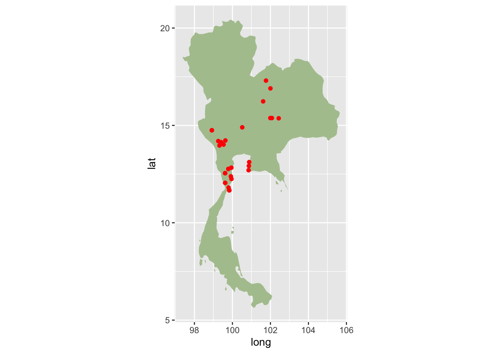

`geom_smooth()` using method = 'loess' and formula 'y ~ x'

3D mapping
library(plotly)
Attaching package: 'plotly'
The following object is masked from 'package:ggplot2':
last_plot
The following object is masked from 'package:stats':
filter
The following object is masked from 'package:graphics':
layout
plot_ly(soy, x =~protein, y =~oil, z =~height, color =~factor(year)) %>%add_markers()
Warning in RColorBrewer::brewer.pal(N, "Set2"): minimal value for n is 3, returning requested palette with 3 different levels
Warning in RColorBrewer::brewer.pal(N, "Set2"): minimal value for n is 3, returning requested palette with 3 different levels
Statistics
comparing groups visually
library(ggpubr)ggbarplot(soy, x ="loc", y ="oil", add ="mean_sd", fill ="loc")

statistical test with ANOVA
loc_anova <-aov(oil ~ loc, data = soy)summary(loc_anova)
Df Sum Sq Mean Sq F value Pr(>F)
loc 3 432.6 144.22 23.04 6.5e-14 ***
Residuals 460 2878.8 6.26
---
Signif. codes: 0 '***' 0.001 '**' 0.01 '*' 0.05 '.' 0.1 ' ' 1
post-comparison
library(agricolae)loc_hsd <-HSD.test(loc_anova, trt ="loc")loc_hsd
$statistics
MSerror Df Mean CV MSD
6.258278 460 19.91684 12.5605 0.8469768
$parameters
test name.t ntr StudentizedRange alpha
Tukey loc 4 3.646474 0.05
$means
oil std r Min Max Q25 Q50 Q75
Brookstead 19.22315 2.225801 116 14.73 25.045 17.50250 19.1500 20.30375
Lawes 20.17125 2.154172 116 15.97 24.565 18.67250 20.1500 21.66250
Nambour 21.37892 2.307549 116 15.76 26.845 19.83000 21.7600 22.80000
RedlandBay 18.89405 3.180201 116 13.03 25.815 16.47625 18.3725 21.42125
$comparison
NULL
$groups
oil groups
Nambour 21.37892 a
Lawes 20.17125 b
Brookstead 19.22315 c
RedlandBay 18.89405 c
attr(,"class")
[1] "group"
plot the posthoc results
plot(loc_hsd)

map making
Download boundary data from online and plot
thailand <-map_data("world", "thailand")ggplot(thailand, aes(long, lat, group = group)) +geom_polygon(fill ="brown") +coord_quickmap()

plot distribution of our plant
maerua <-read_csv("maerua_coord.csv")
Rows: 33 Columns: 3
── Column specification ────────────────────────────────────────────────────────
Delimiter: ","
chr (1): fullCountry
dbl (2): lon, lat
ℹ Use `spec()` to retrieve the full column specification for this data.
ℹ Specify the column types or set `show_col_types = FALSE` to quiet this message.
ggplot() +geom_polygon(aes(long, lat, group = group), fill ="#B0C59D", data = thailand) +geom_point(aes(lon, lat), color ="red", data = maerua) +coord_quickmap()

diversity / community analysis
work with community data
Loading required package: permute
Loading required package: lattice
Registered S3 methods overwritten by 'vegan':
method from
plot.rda klaR
predict.rda klaR
print.rda klaR